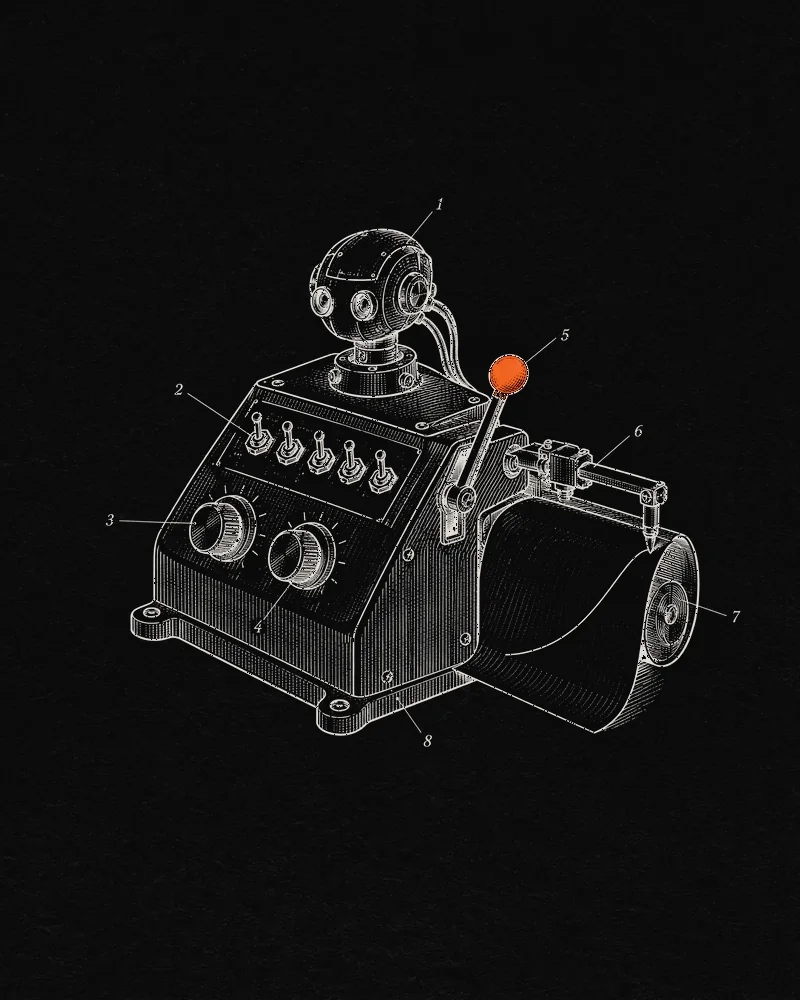

Eliza Labs · 2025
Auto.fun
A no-code launchpad that gives every AI agent its own token on Solana — built so creators, not snipers, win the launch.
- Role
- Head of Engineering · #2 of 19 contributors
- Launched
- 17 April 2025 · Solana
- Code
- 696 commits to the open-source codebase
- Built with
- TypeScript · Rust (Anchor) · Bun · Hono · Postgres · Redis · Raydium · Cloudflare

Context
Eliza Labs is the company behind elizaOS, the open-source AI-agent framework that topped GitHub’s global trending charts in early 2025. Auto.fun was its answer to pump.fun: a launchpad where anyone could spin up an autonomous agent without writing code — and launch its token in the same flow.
It went live on Solana on 17 April 2025 with more than 15 partner projects, among them FightFi, Comput3, Sigma Music, Secret and Astra.
The challenge
Pump.fun-style launches are fast but brutal: bots buy in the first block, creators end up holding little of their own token, and liquidity is fragile once trading opens. For agents meant to run for months — posting on X, trading, managing DeFi positions — that breaks the economics before the agent has shipped.
What I did
- Led development of Auto.fun as Head of Engineering — and wrote a large share of it: 696 commits, the #2 contributor of 19 to the open-source codebase.
- Introduced the “fairer than fair” token model: creators launch and buy in a single transaction, taking up to half of the bonding curve before anyone else can trade.
- Paired it with liquidity NFTs: when a token graduates, its liquidity is locked on Raydium and the creator holds the NFT that claims trading fees.
- Worked across the full stack — a Rust (Anchor) program on Solana, a TypeScript backend on Bun and Hono with Postgres and Redis, and a React front end on Cloudflare.
How it works
- 01CreateAuto, Manual or Import — in Auto mode, AI writes the name, ticker, image and description.
- 02LaunchOne transaction creates the token and lets the creator buy first.
- 03CurveA constant-product curve: 1B supply, 28 SOL of virtual reserves, 1% per trade.
- 04GraduateAt 113 SOL, liquidity moves into a Raydium pool and is locked.
- 05EarnThe creator holds the fee-claiming NFT for 90% of the locked liquidity; Auto.fun 10%.
Agents connect to an X account; every mint address ends in “FUN”.
The token model
Outcome
- 15+partner projects at launch
- 696commits · #2 of 19 contributors
- 1Bsupply per token, on one curve
- 90/10locked-liquidity split, creator / Auto.fun
Auto.fun launched on 17 April 2025 and was covered by The Block, Cointelegraph, The Defiant, ForkLog and Cryptonomist. In mid-2025 it relaunched with support for Solana, Ethereum and Base.
Sources
- Eliza Labs unveils auto.fun, a no-code AI agent launchpadThe Block · Apr 2025 ↗
- ai16z’s Eliza Labs launches AI-powered pump.fun alternativeCointelegraph ↗
- Eliza Labs launches AI agent platformThe Defiant ↗
- Eliza Labs unveils platform for launching AI agentsForkLog · Apr 2025 ↗
- How it worksauto.fun FAQ (archived) ↗
- Feesauto.fun (archived) ↗
- Open-source code and contributorsGitHub mirror ↗
- “He worked on the open-source token launchpad auto.fun”Chainwire · Aug 2025 ↗